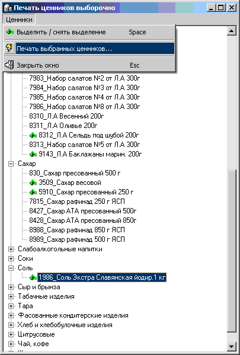

- Для вывода на печать списка-отчета в виде
ценников на полки НЕЗАВИСИМО от признака товарной группы. После нажатия
откроется справочник товаров в виде дерева, в котором выделяйте нужные товары
из разных товарных групп клавишей пробела (Space) - напротив кода_названия
товара появляется зеленая стрелочка, ей же при повторном нажании выделение
снимается. Затем в меню "Ценники" выберите "Печать выбранных ценников..." и
откроется справочник складов по которому нужно определить розничные цены, в
нем выделите нужный склад и нажмите Enter.
- 
 Примечание:
не выделяйте заголовки товарных групп!
Примечание:
не выделяйте заголовки товарных групп!